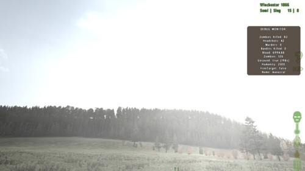
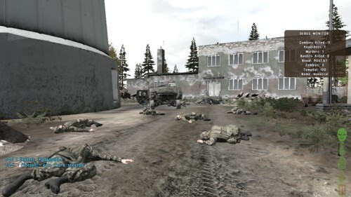
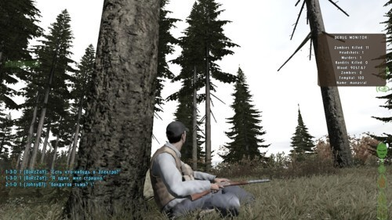

Очнувшись на берегу на окраине одного из больших городов с двумя банками бобов, фляжкой воды и макаровым в руках, я стремительно направился в город за поиском драгоценных провизии и оружия. [[MORE]]Судя по солнцу, было где-то после полудня, что давало уверенные шансы успеть достаточно разжиться до темноты. Необычная и пугающая тишина поглотила город. Заметив в самом конце купол церкви, я решил направиться к ней, надеясь встретить остальных выживших. Неторопливо и аккуратно блуждая через дворы, пытаясь не выходить на открытые улицы, я заходил во все возможные здания, чтобы чем-то пополнить запас. Но тщетно. Потеряв купол церкви из вида, я решил забраться на единственное высокое здание около меня. Это была отличная идея. Наверху оказался труп одного из немногочисленных выживших, у которого я сразу же «одолжил» винчестер с четырьмя обоймами, пару банок консервов, бандажи и карту. «Наверное, убили бандиты», — думалось мне, пока спускался вниз по лестнице. Не успев нарадоваться находке, как мои глаза заметили на центральной площади, как мне показалось, супермаркет. Из-за того, что город был пуст, и мне давно не попадались зомби, я совсем забыл про осторожность и ринулся в тот супермаркет, мигом очутившись у его стеклянных дверей. Но, как оказалось, это было обычным офисным зданием. Пока я разочарованно искал взглядом через стеклянные окна, что-нибудь полезное, вдали послышались выстрелы. Не успев обернуться, как посыпалось стекло: кто-то стрелял в мою сторону. Долго не думая, пригнувшись я побежал за здание, чувствуя пролетавшие мимо пули. Запыхавшийся, но целый я стал бегло искать убежище. К счастью, передо мной стоял двухэтажный дом, около которого расшатывались пара зомби. Выбрав удачный момент, я быстренько прополз в дом, обшарил первый этаж, кинув в рюкзак бандаж и консервы. На втором этаже обнаружил бинокль. Уверенности прибавлялось всё больше. Выстрелы. Посмотрел в окно: зомби на площади голодно бежали в одну сторону. Мысленно пожелав удачи неосторожному выжившему, я наконец-то решил выбираться из города, так как количество зомби значительно возросло.

Небо закатывалось тучами. В городе я провёл около двух часов, после чего решил направиться на северо-западный аэродром. Пока я выбирался из города, начался сильный дождь. Я принял решение идти напрямую через лес, сделать остановку, чтобы согреться и пополнить запасы в одном посёлке на пол пути к аэродрому. Полчаса бега по лесу под дождём не заставили долго ждать: окоченевшему мне пришлось забежать в неизвестную деревушку. Там я смог раздобыть спички и дрова для костра. Нужно было найти отдалённое место, где костёр был был менее заметен. Но для это надо было сначала переждать дождь. Просидев на заправке около получаса, я не заметил, как стемнело. Дождь уже не шёл. Ночь поглотила всё вокруг. Дальность видимости метр или два. Щёлкнув химсветом, я направился к верхушкам деревьев, которые отчётливо были видны на фоне чистого звёздного неба. Я забежал далеко в глубь леса, нашёл ровное место, и развёл там костёр. Наконец-то можно было хорошенько отогреться. Но паранойя, что мой костёр смогут заметить бандиты, не давала мне покоя. Как только отогрелся, я затушил костёр и ждал утро.
